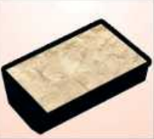
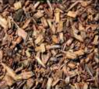
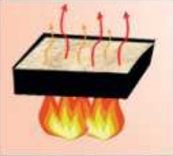
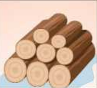
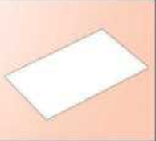

TEMATIKA 1: MATERIALET DHE PËRPUNIMI I TYRE1. Vallja e materialeve
Tani radhën e ke ti
Ndihmë: si të punoj?
Lëvize secilën kartë me butonat “Lëviz lart” dhe “Lëviz poshtë”, derisa radha të jetë e saktë. Kur të mbarosh, shtyp butonin “Dërgo”.
1.
Radhit veprimet që duhen për të prodhuar letrën, nga i pari tek i fundit.

Shtypet e rrafshohet brumi i letrës.
Copat e drurit bëhen grimca të vogla.
Grimcat e drurit njomen me ujë dhe iu shtohen lëndë të tjera.
Druve iu hiqet lëvorja dhe priten në copa.
Pasi brumi shtypet e rrafshohet, ai lihet të thahet.